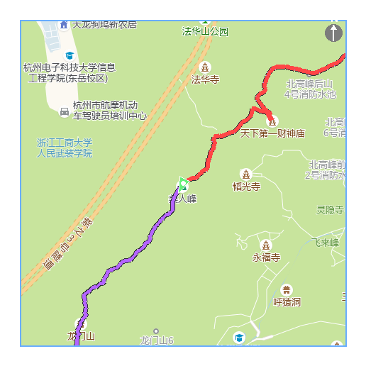
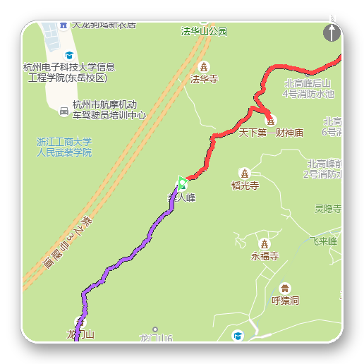
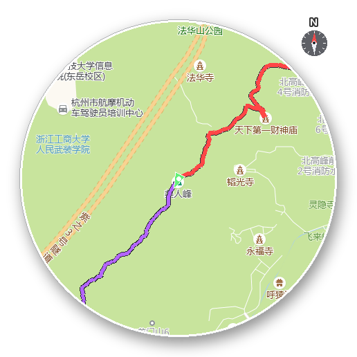
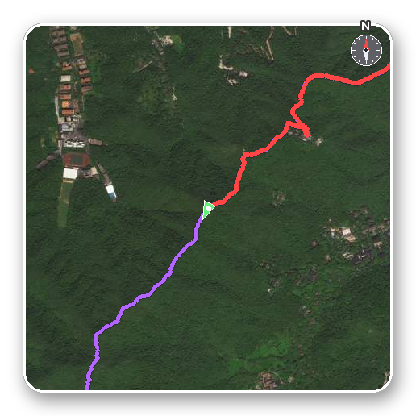
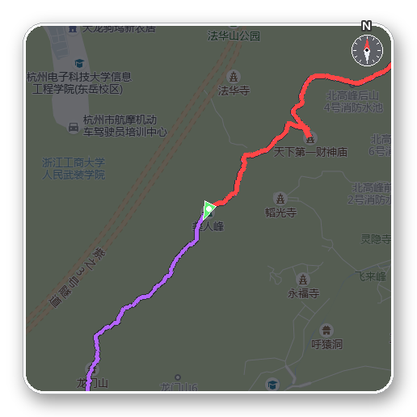
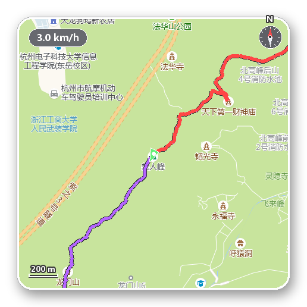

地图导航面板 · 美化方案
以下实例全部用 test.kml 真实位置（北高峰，z15）的高德真实瓦片渲染，轨迹叠加与现有逻辑一致。
所有方案互相正交、可自由组合：底图样式（B/C/D）× 边框（A）× HUD 元素（E）× 罗盘（F）。
现状当前地图面板诊断

- 边框生硬：方形是纯直角 + 2px 亮蓝细边（80,160,255），工程感重
- 底图单一：只有高德 style=8 浅绿标准图，与户外视频画面色调不搭
- 指北针简陋：一个小黑圆 + 一条白线 + N 字
- 缺比例尺：观众无法感知地图的实际空间尺度
- 无阴影层次：面板像「贴」在画面上，与深色玻璃风的海拔一览图不统一
方案 A精致边框：圆角 + 白边 + 柔阴影
性价比最高，改动最小
方形改圆角（半径 ~26px 可配），边缘改为 4px 白色描边 + 1px 深色发丝线，
面板下方加高斯柔阴影，立刻从「贴图」变成「悬浮卡片」；圆形同款处理。
与海拔一览图的深色圆角卡片语言统一。

圆角方形 + 白边 + 柔阴影

圆形 + 白环 + 柔阴影
实现：瓦片合成后按圆角/圆形 alpha 遮罩裁剪（圆形已有遮罩管线），阴影 = 预生成模糊圆角矩形贴片（缓存复用），描边两条 rounded_rectangle。逐帧成本 ≈ 0（遮罩/阴影按尺寸缓存）。
方案 B卫星影像底图
山野场景最「实景」
底图换为高德卫星影像（webst style=6，已实测可用），山林纹理、山脊线直接可见，
徒步视频观感最接近实景导航。缺点：没有路名标注（高德的标注层是不透明的，无法叠加）——
适合「纯地形氛围」；需要地名时仍选标准图。

卫星影像 + 圆角白边 + 新罗盘
实现：GAODE_TILE_URL 增加 map_style 维度（standard/satellite），瓦片缓存目录按样式分桶；GUI 加「底图样式」下拉。已验证 style=6 瓦片可直接下载（实测 200 image/jpeg）。
方案 C暗夜底图（标准图实时滤镜）
与深色 UI 最统一
不换新瓦片源：对现有标准瓦片做暗化 + 降饱和 + 冷色调滤镜
（亮度 ×0.52、饱和 ×0.6、叠 15% 深蓝），地名标注仍然完整可读，
整张地图立刻融入深色 HUD 体系。零额外网络请求，滤镜结果随瓦片缓存。

暗夜底图 + 圆角白边 + 新罗盘
实现：ImageEnhance.Brightness/Color + 色调叠加，处理发生在瓦片合成后、轨迹叠加前，每帧一次 460² 图像运算（<5ms），或缓存到合成层。
方案 DHUD 三件套：新罗盘 + 比例尺 + 速度胶囊
罗盘：刻度环 + 红白双针（红针恒指真北，随「运动方向朝上」模式反向旋转），替代现在的黑圆白线；
比例尺：左下角黑白分段线段，按当前纬度与 zoom 自动取 50/100/200/500m 整齐档位；
速度胶囊：左上角半透明胶囊实时显示当前速度（配速换算 km/h），可开关。

新罗盘 + 200m 比例尺 + 速度胶囊（真实数据）
实现：罗盘/比例尺为纯 PIL 绘制；比例尺米/像素 = 156543.03·cos(lat)/2^z；速度取自现有 pace_s。三个元素各自独立开关，持久化进 .kmlproj。
推荐落地顺序
① 方案 A（边框）必选 —— 投入最小、观感提升最大；② 方案 D（HUD）按需勾选；
③ 底图三选一做成 GUI 下拉：标准 / 卫星 / 暗夜（B、C 都做成可切换而非替换，现有标准图保持默认）。
所有新参数沿用 .kmlproj 持久化机制，GUI 预览实时生效。
确认后我按选定组合实现到 renderer.py 与 GUI。